Curating Cultural ConnectionsAbout
Music is full of stories that have yet to be told. Stories that provide context, create connections, and go deeper than a single performance.
Just as the story of David and Goliath taught the world that true strength does not lie in size, but in vision, courage and strategy, we believe that artists carry stories that have the power to bring the world a little closer together.
At Goliath, we organise events, festivals and concerts where these stories can come to life. We create space for artistic freedom and guide artists from dream to execution — from funding to production — enabling them to tell their stories without restrictions.
We Also Build Bridges Between Cultures
Through cultural exchange projects, we encourage encounters, dialogue and new forms of collaboration, while creating new opportunities for the international development of Dutch artists.
Exchanges that cross cultural boundaries and leave a lasting impact.
In a world of growing polarisation, we hope to build a platform centred around connection and development. One that brings people and cultures a little closer together, step by step.
Support
Goliath is supported by Paradiso through the +Paradiso programme, an intensive talent development programme supporting emerging cultural organisations in strengthening their artistic vision, organisational structure and sustainable funding models. Through the programme, Goliath benefits from Paradiso's extensive expertise, network and experience as one of the Netherlands' leading music venues.
Goal
In the coming years we hope to offer artists from all backgrounds a platform to make their voices heard.